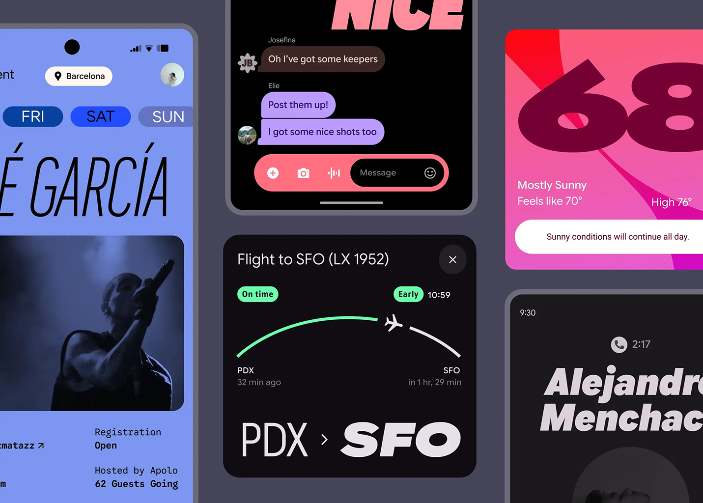

Google Sans Flex is the variable-font member of Google's Sans type family, built so a single font file can behave like dozens of different styles. Instead of choosing between a handful of fixed weights, designers can dial in six independent axes — weight, width, optical size, slant, grade, and roundedness — to match a typeface's tone to a product, a mood, or a screen size. It was developed with the variable-font specialists at Font Bureau and Pathfinders, growing out of Google's decade-long effort to give its brand type more expressive range without losing legibility. Google Sans Flex was released as an open-source font in 2025, alongside Google Sans itself.
To contribute, see github.com/googlefonts/googlesans-flex.
As interfaces grow more dynamic and personal, our designers need typography that does more than just present information; the type should also convey feeling and adapt to varying contexts and states. While Google Sans was clear and effective, it didn’t offer the nuanced expressive range required to truly match a product’s mood or a user’s preference.
This led us to collaborate with the pioneers in variable font technology at Font Bureau and Pathfinders to create Google Sans Flex. Unlike traditional fonts that have a handful of fixed styles like bold and italic, Google Sans Flex offers granular control over six different design axes: weight, width, optical size, slant, grade, and roundedness.
“Google Sans Flex is a power tool for expression,” says Google Fonts Product Manager Sophia Siao. “Different combinations of axes can unlock a huge range of feeling and emotion, all while preserving a cohesive reading experience.”
Google Sans Flex lets designers “sculpt” UI text with remarkable precision. Imagine making text feel “calm as a whisper” or “loud and rugged” simply by adjusting its weight, or evoking a “personal, playful” tone by fine-tuning its roundness. Our designers were particularly excited by the ability to precisely adjust how rounded or soft the text appears; these subtle shifts deeply influence how readers experience and connect with a design.
This expressive power isn’t just about aesthetics; it directly impacts how users experience Google products. Our research engaged over 3,000 readers, which taught us one thing: flexibility matters. Readers found the taller, more elegant styles to be more premium and engaging than standard fonts. This adaptability doesn't just look better; it allows designers to tailor readability for every specific use case. The optical size axis intelligently adapts letter shapes to maintain readable proportions at any size, from a smartwatch to a billboard, ensuring that expressiveness never comes at the expense of legibility. The typeface was recognized as a Red Dot Winner 2024.
Ultimately, Google Sans Flex empowers designers to infuse interfaces with distinct personality and nuance, creating digital experiences that feel more intuitive, personal, and genuinely helpful.
Google Sans launched as a proprietary brand typeface — meaning that it could only be used in Google products. While that control was great for protecting Google’s brand, it created a fragmented typographic experience across the digital ecosystem. You might see Google Sans in Gmail, then open WhatsApp and see Roboto or a device-specific font. It’s a persistent, if subtle, point of friction.
“It just doesn’t feel as nice,” stresses Visual Designer Megan Lynch. “On a subconscious level it impacts the experience.” This fragmented visual language, unlike the unified font experiences on some other platforms, made the digital journey less than seamless.
So this year — 2025 — Google decided to make Google Sans and Google Sans Flex open-source. It isn’t just about making a great font available; it’s about fostering a more consistent and polished digital environment for everyone. By offering Google Sans and Google Sans Flex to the wider community, we hope more developers and designers will bridge the visual gap between first-party and third-party apps. The goal is a more unified experience across devices and platforms, creating clearer, more comfortable interfaces for users wherever they engage with technology.

The story of Google Sans is a masterclass in need-based design — it was created not by a single flash of inspiration, but a thoughtful, human-centered evolution. Each problem, from misaligned lockups to illegible code, revealed an unmet need and ultimately led to innovation and improved user experience.
By making Google Sans Flex open-source, we’re extending that commitment beyond our walls. It’s an invitation to designers and developers worldwide: Use these tools, contribute to their growth, and together, let’s build clearer, more accessible, and more beautiful digital experiences for everyone. With your help, we can shape a more legible future, one character at a time.
Read more here.